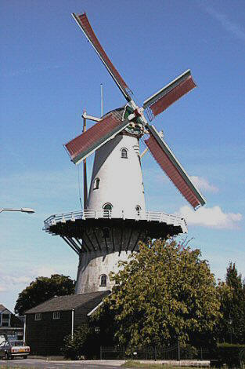

"Windlust"

|  | Op een archiefstuk uit 1326 is
er sprake van een
"molle opden mollecamp" in Wateringen. In 1574 vernielden de Spanjaarden deze
molen. Arnoldus van Rhijn wordt 1776 vermeld als molenaar. Hij was een familielid van
de bekende familie van
Rhijn in Hazerswoude. Het Dagblad van 's Gravenhage
maakt in 1812 melding van de inzet van "de korenmolen, cum annexis te Wateringe"
voor f 8.300,-. Dat is dan een wipkorenmolen, getuige een in been uitgesneden
afbeelding. De buurman van molenaar Persoon (de notaris) laat een hoog huis bouwen.
Persoon besluit een nieuwe molen te bouwen en wel zo hoog "dat hij vanaf de stelling
in de schoorsteen van de notaris kan pissen". De grote ronde stenen molen (stelling
14 meter, vlucht ruim 25 meter) wordt in 1869 in gebruik genomen. Op 14 november 1880
breekt brand uit en de molen brandt nagenoeg volledig uit. De molen wordt kort daarna
herbouwd, waarbij gebruik gemaakt wordt van de onderdelen van vermoedelijk een van de
afgebroken molens van de polder "de vier Noorderkoggen" te Medemblik. In 1930
wordt C.N. Bom eigenaar van de molen en kort daarna schaft hij een dieselmotor aan. als
blijkt dat voor een hoognodige reparatie aan de molen
f 400,- nodig is, moet vastgesteld worden
dat het geld er niet is: het is crisistijd! Geld voor dieselolie (2 cent per liter) is er
nog wel. Tijdens de hongerwinter van 1944 wordt nog geprobeerd op de wind te malen maar
tevergeefs. In 1947 worden de stelling en de schoren gesloopt en in 1952 wordt het
gevlucht verwijderd. In 1969 koopt de stichting "Vrienden van de Wateringsche molen"
de molen van de familie Bom. De firma P.van Beek uit Rijnsaterwoude voert de restauratie
uit. Besloten wordt maar een koppel maalstenen te plaatsen. Dit koppel komt, tezamen met
het bovenwiel, het spoorwiel en nog enkele andere onderdelen van de afgebroken korenmolen
te Rhoon bij Rotterdam. Op 1 mei 1972 wordt de molen feestelijk in gebruik gesteld. Vanaf
die tijd wordt de molen iedere zaterdag bemalen door vrijwillige molenaars. In 1993 volgt
nog een grote restauratie: o.a. 5 nieuwe zolders met trappen en de wieken worden opnieuw
opgehekt. De gebr. Bom hebben in de molen nog steeds een bedrijf, waarin naast veevoer ook
meel voor menselijke consumptie verkocht wordt. Bezoekers van de molen kunnen nog steeds
het maalproces gadeslaan. In 2008 is de gehele stelling
vervangen i.v.m. de slechte staat van de stelling.
De molen staat er
nu weer
prima bij, dankzij de inzet van een
actief stichtingsbestuur. Ook kun je de foto's van de restauratie welke in 1971-1972 is uitgevoerd om de molen weer te completeren bekijken: Meer informatie over de molenaars en de molen op:http://www.monumentaalwestland.nl/
Hier kunt u de molen van binnen bekijken:
Bekijk hier een rondvlucht rondom de molen gemaakt met een drone door Peter van der Sman. |
Winkel
|
Onderin de molen is een diervoederwinkel gevestigd waar u alles voor de
verzorging van paard tot cavia en allerlei aanverwante artikelen kunt kopen .
Tevens kunt u er ook tarwemeel
kopen, welke
door de molen gemalen is. Ook zijn er enkele andere meelprodukten
te koop. |
Technische gegevens
| naam adres bouwjaar type functie eigenaar molenaars Openingstijden |
"Windlust" Heulweg 8 2291 BX Wateringen 1869 stellingmolen korenmolen Stichting 'Vrienden van de Wateringsche molen' sedert 1969 Eigen website George Middendorp en Peter van Sloten (tel 06-28970667 (George Middendorp) (niet voor de winkel) meer informatie over meelproducten, bel de winkel 0174-292274 (Gebr. Bom) Zaterdags van 10.00 uur tot 16.00 uur. |
Constructie
|
romp kap wiekenkruis vlucht wiekvorm bovenas kruiwerk vang inrichting luiwerk |
ronde stenen molen, geheel gepleisterd, en gecementeerd gedekt met dakleer gelaste stalen roeden, Fabr. Derckx, Beegden binnenroede: nr. 70 buitenroede: nr. 69 (beide uit 1972) 25,40 m. Oudhollands gietijzer, in de lengterichting doorboord, Fabr. L.I. Enthoven & Co te s'Hage 1856 no. 139; lang 4,72 m. 48 ijzeren rollen : kruihaspel losse Vlaamse blokvang uit vier stukken : wipstok 1 koppel 16der blauwe maalstenen sleep en elektrisch luiwerk elevator, verschillende elektrisch aangedreven maalderijmachines |
Overbrengingen
| aantal kammen bovenwiel aantal staven bovenschijfloop aantal kammen spoorwiel aantal staven steenschijfloop overbrengingsverhouding |
67 31, steek 11,0 cm. 79 24, steek 10,3 cm. 1 : 7,11 |
Versieringen
|
eenvoudige, geprofileerde baard, groen geschilderd met witte rand en geel
opschrift: ANNO 1869 en opgelegde vrij grof bewerkte engelfiguren met bazuin: voorts in het midden een opgelegd uitgezaagd wapen met grijs veld en zwarte ster (wapen van Wateringen); op de groene witgerande achterbaard het gele opschrift: WINDLUST; de sluitsteen boven de toegangsdeur vermeldt: WINDLUST C.P. PERSOON 1869 |


Deze pagina is gemaakt op 20-12-2006 tijd: 22:26 uur.
Laatste wijziging: 18-8-2009: Tijd 20:42 uur..